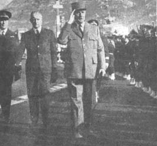
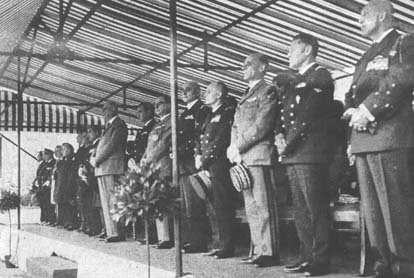
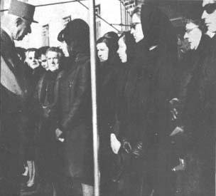
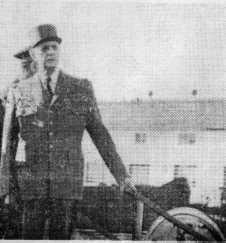
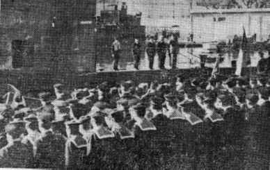

|
|
Entourant le chef de l'Etat venu s'associer
à son deuil, la population toulonnaise, plongée
dans l'affliction, a rendu un suprême et solennel adieu
à l'équipage du sous-marin "Minerve", disparu
corps et biens en Méditerranée.
Magasins clos et toute activité suspendue pour une matinée,
rumeurs de troupes en marche depuis l'aube, drapeaux à
mi-hampe et cravate de crêpe, bourdon des églises
égrenant les notes du glas... Un important service d'ordre
est en place : 2.000 gendarmes, C.R.S., gardiens, inspecteurs
ont investi la ville. Ils contrôlent et surveillent fenêtres,
toits et recoins : l'attentat manqué du Mont Faron est
dans les mémoires...
|
L'allocution du
général De Gaulle
"Des marins sont morts en mer. Ils étaient
des volontaires. C'est à dire qu'ils avaient d'avance
acceptés le sacrifice et qu'ils avaient conclus un pacte
avec le danger"
"C'est pour cela, en particulier que le sous-marin "Minerve"
a laissé au coeur de la France toute entière,
un souvenir profond et à ses armées un exemple
qui durera. Au nom de la patrie, je salue leur mémoire
et je suis sûr que de ce qu'ils ont voulu faire et de
ce qu'ils ont fait sortira pour notre France quelque chose de
fort comme ils l'avaient voulu. Vive la France."
|

Arrivée
du Chef de l'Etat et du ministre des armées à
la B.S.M.
Photo "Cols Bleus " N°1026
du 17 février 1968.
|
|
L'adieu de Toulon et du chef de l'Etat à l'équipage
de la Minerve

La
tribune officielle pendant la cérémonie sur la place
d'armes.
(photo "Cols Bleus" N° 1026 du 17 février
1968.)
La cérémonie religieuse
Il
est 9H45 lorsque le général de Gaulle, en uniforme,
arrive sur la place d'armes ou va être célébré
l'office des morts. La foule l'applaudit. Il prend place sur un podium
auprès de M.M. Mesmer, ministre des armées, Roy, préfet
du Var ; des généraux Fourquet, délégué
ministériel de l'armement ; Ailleret, chef d'état major
des armées ; des amiraux Patou, chef d'état major de
la marine et de Scitivaux de Grietche, préfet maritime.
Face au podium officiel, sur une seconde estrade, ont pris place les
familles des victimes : pères ou frères qui contiennent
leur chagrin, visages crispés et machoires serrées.
Mères, femmes, fiancées, accablées de douleur
sous les voiles noires.
Tout autour de la place que ferme un rampart de cols bleus et de pompons
rouges c'est la foule silencieuse des Toulonnais. Les "enfants de
Bretagne" qui composent le quart de la population toulonnaise sont
en nombre.
L'autel a été dressé dans le kiosque à
musique au centre de la place. Avant l'office, un aumonier de la marine
invite l'assistance au recueillement. Les marins de la Minerve, que
la mer nous as pris, dit-il, nous rassemblent de tous les horizons
dans la foi et l'amitié. Le service, une messe basse, est concélébré
par Mgr Jean Badre, vicaire aux armées, le chanoine Hubert
Valet, vicaire général de la marine,le père Le
Bihan, beau frère du commandant de la Minerve et le chanoine
de Magondeaux, ancien lieutenant de vaisseau.
A l'instant du memento des morts, dans un silence impressionnant,
les tambours voiles et les clairons lancent vers le ciel, les notes
poignantes de la sonnerie "aux Morts“. Et c'est l'homélie
de l'êveque de Toulon. Le prélat évoque le sacrifice
de "ces hommes qui avaient accepté volontairement le danger
pour le bien de tous et qui ne peuvent être morts en vain".
Le pasteur Lestingant invite ensuite à prier pour les âmes
des trois protestants que comptait l'équipage de la Minerve.
|
Citation
à l'ordre de l'Armée des officiers et de l'équipage.
"Le ministre des Armées cite à l'ordre de l'Armée,
le commandant, l'état-major et l'équipage du sous-marin
Minerve. Armant un sous-marin à haute performance dans les
conditions très exigeantes de la navigation sous-marine, ont
toujours donné un haut exemple de valeur professionnelle et
de dévouement au bien du service. Disparus en service commandé
avec leur bâtiment devant Toulon le 27 janvier 1968."
|

Le général DE GAULLE présente
ses condoléances aux familles.
photo "cols bleus" N°1026 du 17 février 1968.
|
Le général de Gaulle en plongée à bord
de l'Eurydice
Il est 10H50 lorsque le chef de l'état pénètre
dans la darse des sous-marins ou doit se dérouler la deuxième
phase de la cérémonie. Le chef de l'état est
acceuilli par l'amiral Storelli qui commande les forces sous-marines.
Il passe en revue les équpages rangés en carré
autour d'un mat blanc ou flotte face à la mer l'emblême
tricolore, frappé en son centre d'une croix de Lorraine.
Mélés à ceux de l'Eurydice, de la Junon, de la
Flore, de la Vénus et de l'Ariane sept marins arborent le béret
de la Minerve : ce sont ceux qui n'avaient pu embarquer le jour fatal.
Après la lecture de la citation à l'ordre de l'Armée
et sa brève allocution, le président de la république
serre, l'une après l'autre, les mains des parents des victimes.
Puis à la surprise générale, il embarque en compagnie
de Mr Messmer, à bord de l'Euydice, pour effectuer une plongée
au large.
A 11H15 l'Eurydice, dont le commandant et l'équipage n'ont
été prévenus qu'à la dernière minute,
se détache du quai, tandis que joue la musique de la flotte.
A bord, au milieu des marins en bleu, au garde-à-vous, se découpe
sur la mer, la longue silhouette kaki du général, qui
salue les équipages alignés à terre. Les sifflets
de gabier se font entendre. Le submersible glisse lentement vers la
rade, vers le large...
Dans le secteur 65 ou disparut la Minerve, l'Eurydice commandé
par le lieutenant de vaisseau Gérard Moulineud, descend à
40 m. Pendant l'immersion, le général de Gaulle partage
dans le minuscule carré le repas des officiers. Il se fait
raconter la vie quotidienne des sous-mariniers, leurs problèmes,
leurs occupations.le capitaine de vaisseau Pierre Emeury, commandant
de la 1ere escadrille des sous-marins, luit fait un "amphi" sur la
technique de plongée. Lorsque l'Eurydice fait surface, le capitaine
de vaisseau Flohic, aide de camp du président de la République,
a jeté dans les vagues, tombeau des marins engloutis, une couronne
de rose et d'oeillets cravatée de tricolore. A 13H32 l'Eurydice
est de retour au port.
Le Télégramme de Brest ( février
1968 )
|
|

Le
général de Gaulle sur l'Eurydice
|

Le
chef de l'Etat et sa suite sur le pont de l'Eurydice.
|
|
Le
général De Gaulle et la Minerve
Dans le 1er tome du recueil intitulé "DE GAULLE, mon père
- Entretiens avec Michel TAURIAC", l'Amiral Philippe De Gaulle
livre deux confidences quant à l'attitude du Général
de GAULLE lors de la disparition du sous-marin LA MINERVE.
a) Page
229 :
"Il n'avait d'illusions ni sur la nature humaine ni sur lui-même.
C'est ce qui l'a fait paraître souvent cynique ou ingrat vis-à-vis
de ses collaborateurs et même de ses proches. D'autant qu'il
revêtait sa véritable nature d'une couche épaisse
de pudeur qui aurait pu passer pour de la dissimulation. "Tout
homme a une armure, me déclara-t-il un jour, mais la plupart
se savent pas la porter". Pas plus que je ne l'ai vu autrement
qu'en complet trois pièces ou en uniforme dès qu'il
sortait de sa chambre, je ne l'ai vu sans cette armure. Peut-être
n'a-t-il fait qu'une exception : lors de la disparition du sous-marin
MINERVE, le 27 janvier 1968. Les commentaires qu'il m'a faits à
ce sujet témoignaient d'une grande émotion et contredisent
l'indifférence que lui ont faussement prêtée quelques
journalistes. Rappelons qu'après avoir assisté à
la messe des morts sur la place d'armes de Toulon et rencontré
les sous-mariniers et leurs familles, il a tenu à effectuer
une sortie en mer pour plonger à bord du sous-marin EURYDICE
du même type que le bateau perdu.
b) Pages
232 et 233 :
- Devant la mort des autres, son extrême sensibilité
n'étonnait-elle pas sa propre famille ?
- Parfois, oui. Je me souviens par exemple du jour où, alors
qu'il commandait un bataillon de chasseurs en Rhénanie, nous
l'avons vu arriver à la maison avec un brassard noir au bras
gauche. Personne n'était mort dans la famille. Frappée,
ma mère regardait sa manche comme si elle avait vu un
accroc. Il nous a alors expliqué qu'il avait décidé
de porter le deuil d'un de ses jeunes troupiers qui venait de mourir
d'une congestion pulmonaire parce que c'était un enfant trouvé
et que personne d'autre n'aurait pu accomplir ce geste à sa
place. Nous verrons ce brassard pendant près de six
mois. De même le verrons-nous après la mort d'un gendarme
qui fut tué accidentellement alors qu'il était de garde
à La Boisserie. Il marqua de la même façon, pendant
six mois, la mort de ses frères Xavier et Pierre. On vit aussi
sa manche garnie de ce signe de deuil pendant un mois après
la disparition tragique des sous-mariniers du MINERVE."
|
|
|